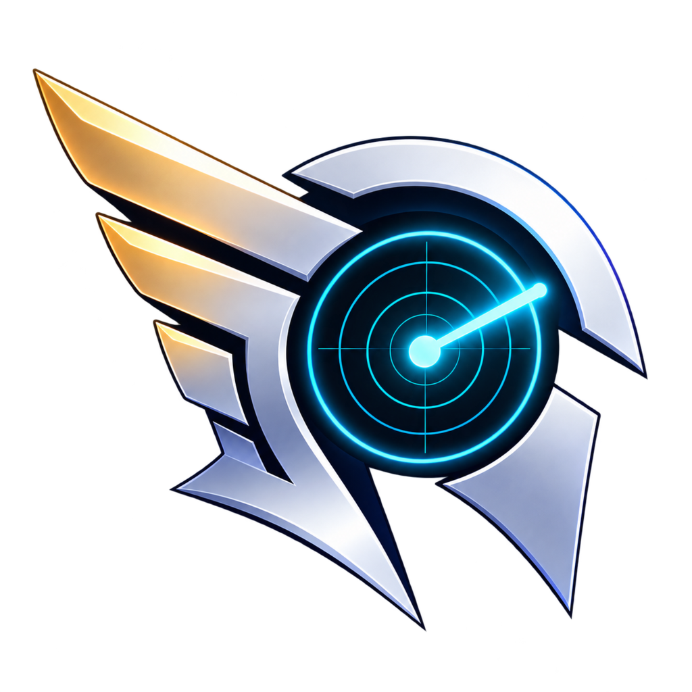

01 / RELEASE RADAR
Bring every new release into the light.
/releases <tool> returns the latest release, notes, and a direct GitHub link. /downloads <tool> reports asset downloads without digging through tabs.

HERMESWATCH / CYBERCOREMESSENGER OF THE CYBERCORE
Hermes Watch carries the signal between your projects and your people — releases, CI, downloads, and development intelligence delivered straight to Discord.
WHAT THE HERALD CARRIES
Hermes is deliberately small, explicit, and useful. It reads GitHub when summoned, publishes only the updates you opt into, and never needs to read Discord message content.
01 / RELEASE RADAR
/releases <tool> returns the latest release, notes, and a direct GitHub link. /downloads <tool> reports asset downloads without digging through tabs.
02 / CI OMEN
/status gives the Cybercore project line a quick, readable health check.
03 / DEV-LOG
The optional stateful poller posts compact project activity and release links to #dev-log without replaying old history.
04 / PRIVATE TRIAGE
/troubleshoot is ephemeral and opt-in. Hermes provides a first-check path, issue checklist, redaction warning, and direct project link — while keeping message reading disabled.
THE BOT-LIKE PART
Hermes is not another noisy all-purpose bot. It is the watchman at the gate: a narrow interface for the project events your community actually needs.
THE RITUALS
/statusCI status across every tracked repoPUBLIC/releases <tool>Latest release, notes, and GitHub linkPUBLIC/downloads <tool>Latest release asset download totalsPUBLIC/toolsClickable project cards for #dev-toolsPUBLIC/troubleshootPrivate opt-in triage guidanceEPHEMERAL/server-auditPrivate channel layout and permission auditEPHEMERALCALL THE MESSENGER
Clone the bot, add the token, and let the herald take the watch. GitHub token access is optional for public repos, but recommended for reliable project polling.
$ git clone https://github.com/darkstardevx/hermes.git $ cd hermes $ cp .env.example .env $ cargo run --release # Hermes Watch is listening.